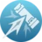
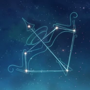

Antes era paria, pero hoy en dia es una cazadora excepcionalmente ágil. Siempre está preparada para hacer uso de su arco y sus flechas cuando es necesario.
Artefacto/s recomendados


Atq% / Maestria

Bono Cryo

Prob/Daño critico
Prob/Daño critico > Atq% > Maestria
Talentos
Pasivas
Constelación
Armas Recomendadas


Personajes compatibles